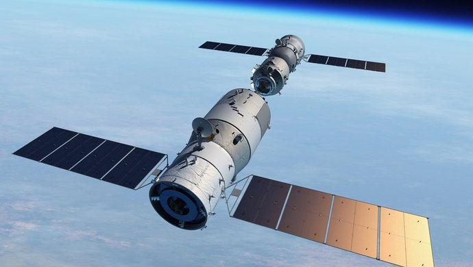
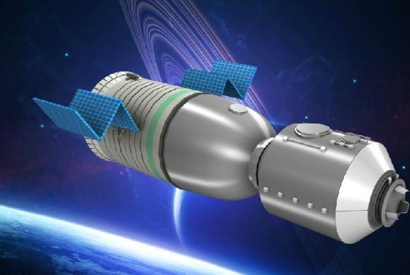

- 你当前所在的页面：首页>返回>航天探测器
我国成功发射神舟十一号
- 信息发布时间:2016-10-17 15:26 网页性质：安全
- 
神舟十一号于2016年10月17日7时30分从酒泉卫星发射中心发射，随后与天宫二号对接形成组合体，2名航天员进驻天宫二号，进行了为期30天的驻留，在轨飞行期间，完成了一系列空间科学实验和技术试验。2016年11月18日13时59分，神舟十一号飞船返回舱在内蒙古中部预定区域成功着陆，执行飞行任务的航天员景海鹏、陈冬身体状态良好，天宫二号与神舟十一号载人飞行任务取得圆满成功，标志着我国载人航天工程空间实验室阶段任务取得具有决定性意义的重要成果，为后续空间站建造运营奠定了更加坚实的基础。
飞行乘组由航天员景海鹏和陈冬组成，景海鹏担任指令长。航天员景海鹏参加过神舟七号、神舟九号载人飞行任务，航天员陈冬是首次参加载人飞行任务。

神舟十一号在外观、任务、技术上均与神舟十号相似，为了验证空间站关键技术，神舟十一号只在技术状态上略有调整。它的发射表明我国已掌握天地往返运输技术，神舟飞船的技术状态已基本稳定，从产品研制阶段进入新的应用阶段。
神舟十一号载人飞行任务的主要目的：一是为天宫二号空间实验室在轨运营提供人员和物资天地往返运输服务，考核验证空间站运行轨道的交会对接和载人飞船返回技术；二是与天宫二号空间实验室对接形成组合体，进行航天员中期驻留，考核组合体对航天员生活、工作和健康的保障能力，以及航天员执行飞行任务的能力；三是开展有人参与的航天医学实验、空间科学实验、在轨维修等技术试验，以及科普活动。
参加任务的酒泉发射场、测控通信和着陆场等系统与神舟十号飞行任务状态基本一致。为进一步提高安全性、可靠性和适应本次飞行任务的具体要求，神舟十一号飞船和长征二号F遥十一火箭分别进行了部分技术状态更改。
神舟十一号飞船入轨后，2天内完成与天宫二号的自动交会对接，形成组合体，航天员进驻天宫二号，组合体在轨飞行30天。期间，2名航天员将按照飞行手册、操作指南和地面指令进行工作和生活，按计划开展有关科学实验。完成组合体飞行后，神舟十一号撤离天宫二号，并于1天内返回至着陆场，天宫二号转入独立运行模式。
医监医保方面。飞行期间将综合利用医疗问询、基本生理指标检查、尿常规检测，以及心肺功能检查等手段，定期对航天员实施健康状态评估；更加注重加强舱内微生物控制，并配置了预防治疗药品和有关医疗器械，来确保飞行期间航天员的健康。此外，这次任务首次建立起天地远程医疗支持系统，通过天地协同会诊，来解决航天员的在轨“看病”问题。
失重生理效应防护方面。配备了防护装备和锻炼设备，尽可能降低失重给航天员带来的不利影响。比如：使用套带，解决飞行初期出现的头晕、鼻塞等不适反应；通过使用拉力器和自行车锻炼、穿着企鹅服工作，对心肺功能下降、肌肉萎缩和骨丢失等进行综合防护。
营养健康保障方面。武平说，这次任务进一步丰富了航天食品，种类有近百种，食谱周期达到5天，膳食结构更加科学；同时还考虑了个性化需求，增强了食品感官接受性，任务期经过了航天员的试吃，他们还是比较满意的。“应该说，这些食品可以满足航天员在轨飞行期间的能量摄入和营养需求。
心理支持方面。针对本次任务在轨飞行时间长的特点，将加大飞行期间对航天员的心理支持力度。在专业心理医生支持、亲情交流、航天员团队支持等基础上，进一步完善了技术支持手段。比如，研制了基于虚拟现实技术的心理舒缓系统，升级了天地信息交流系统，航天员可以随时和地面沟通信息、传递邮件，与亲朋好友进行音视频交流，以此来缓解航天员的压力，保证航天员的心理健康。